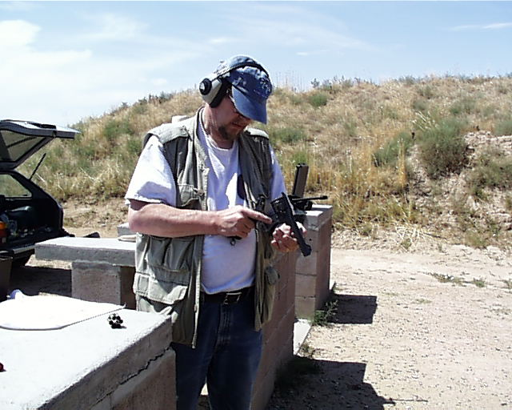

A Day at the Range
L. Neil Smith's Blog
August 18, 2003Page 5

Here's a better picture of the big British sixgun opened. The ejector star in the back of the cylinder pops up, ejecting the brass, then pops back down again so you can reload. The whole operation is performed by a cam on the same axis that the gun breaks on, and can be defeated at need by pushing the cam in with your thumbnail.
That's a moon clip full of fired cases there on the bench.
I'll never understand why the Brits gave this magnificent weapon up in favor of a smaller revolver that doesn't even shoot .38 Special, but the even then obsolete .38 Smith & Wesson. Later, of course, they adopted the 9mm High Power. But I'd gladly go into harm's way—if I had to—armed with the old .455.
Behind me, a little sampling of the big sky and sere vegetation of the high, dry plains. Many people hate it, but I love the Grand Prairie in all of its moods and seasons. This day was sunny, but not too hot. The time before, I sunburned my neck pretty well.